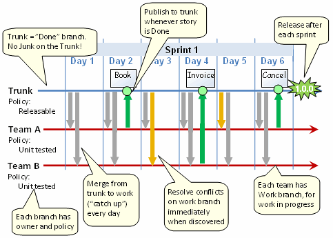

Git Tools and Policies
Commits
Branches
Every branch has an owner and a commit policy. The owner decides the commit policy.
master
This branch is the public face of the Society Pro project.
- Owner:
Jorge + Cesar - Commit Policy:
The master branch contains only "releasable" code that builds and passes all tests on Windows, Linux, and Mac.
The only commits tomastershould be merge commits fromxp-devordev-guanaja.
Releasable means that a customer could run into the room as soon as the commit happens, say "Great! Let's go live now!", and nobody in the team will say "no, but wait".
xp-dev
This branch is the staging point for sharing code between XP Squad Developers.
- Owner:
Jorge - Commit Policy:
Code must have comments, placed before the code block.
Code must have tests.
dev-guanaja
This branch is the staging point for sharing code between XP Squad Developers.
- Owner:
Cesar - Commit Policy:
TBD
Syncing Branches
Since our project has multiple teams, we need a way to sync the different code we write. This strategy encourages frequent commits and easy merge resolutions:
- Every commit to
mastershould be either a merge commit fromxp-devor a merge commit fromdev-guanaja. - On every commit to master, every team and team member is responsible for rebasing their branches with the new code. The sooner you resync your branch, the fewer conflicts you'll have.
- Thus, if X commits a feature to master before Y, it is Y's responsibility to include X's new feature in all future commits that are merged from Y's development branch to master.

Example code:
$ ## XP Squad develops a new features:
$ git checkout xp-dev
$ git echo "conflicting change" > README.md
$ git commit -m "Change readme"
$ ## After all builds and tests green, XP Squad deploys the feature to master:
$ git checkout master
$ git merge xp-dev
$ git push
$ ## Guanaja Team begins development:
$ git checkout dev-guanaja
$ git echo "new code" >> ICrypto.cpp
$ git commit -m "ICrypto changes"
$ ## Guanaja Team notices a new feature since their last master commit and updates dev-guanaja branch:
$ git fetch origin
$ git rebase origin/master
$ ## Guanaja Team resolves any merge conflicts
$ ## Guanaja Team completes their feature, gets green builds and tests, deploys to master
$ git checkout master
$ git merge dev-guanaja
$ git push
Git Submodules
A 'submodule' is a reference, stored in a parent repo, pointing at a specific commit of the child repo.
TASK: Get the most recent submodules from github
Start in root:
0. cd /c/dev/sopro/Cambrian-src
Get the latest parent code:
1. git checkout dev-guanaja
2. git pull origin dev-guanaja
Update all the submodules to the commits specified in `git submodule status`:
3. git submodule update --init --recursive
TASK: Add a new child submodule to a parent project
Start in root:
0. cd /c/dev/sopro/Cambrian-src
Get the latest parent code:
1. git checkout dev-guanaja
git pull origin dev-guanaja
Confirm that you do not have the new child submodule yet:
2. git submodule status
Add the NEW submodule:
3. git submodule add https://github.com/SocietyPro/html5-chat-log.git
Verify the parent project knows about the new submodule:
4. git status
>> "new file: html5-chat-log"
git submodule status
>> " 34160ab391bcddecdb02a6f5c548846e49e21155 html5-chat-log (heads/master)"
Caution! By default a submodule points at head/master.
This means that whenever you check out the submodule you'll get the latest version.
Many times, this risks breaking your or someone else's future development.
It's usually better to lock in a specific commit of the submodule. You can change it later.
Choose what commit of the child repo you want to include in the parent:
5. cd html5-chat-log # Change to submodule directory
git log -n 1 # See commit history
git checkout 34160ab391 # specify by commit hash
# or,
git checkout 0.2.0 # specify by commit tag
Change from the child folder to the parent folder:
6. cd ..
Add the new submodule reference to the commit staging area:
7. git add .gitmodules html5-chat-log
Commit the new submodule reference into the PARENT repo:
8. git commit -m 'Added html5-chat-log at latest master'
TASK: Change an EXISTING submodule (child repo) to point to a new commit
Start in root:
0. cd /c/dev/sopro/Cambrian-src
Confirm that you DO have the child submodule already:
1. git submodule status
Update all the submodules to the commits specified in `git submodule status`:
2. git submodule update --init --recursive
Change to the submodule directory:
3. cd html5-chat-log
Find your desired new commit:
4. git log
Checkout whatever commit you'd like to have in the parent repo:
5. git checkout 0.2.0
Change from the child folder to the parent folder:
6. cd ..
Add the new submodule reference to the commit staging area:
7. git add .gitmodules html5-chat-log
COMMIT the change into the parent repo:
8. git commit -m 'Use new version 0.2.0 of html5-chat-log'
Automated Testing
- Fast builds
- unit/integration tests, runs in less than 5 minutes
- notification is sent to the team lead and to developers having committed changes.
- Slow builds
- acceptance test builds, run after the fast builds
- notification is sent to team lead, testers, and developers having committed changes.
- Nightly builds
- QA metrics, performance tests, and so on
- only run if the other builds work
- status available to all team members
- these provide a snapshot picture of project health before the daily scrum meeting.
Hello Team!
A Markdown Card
This card is written in markdown.
It's a standalone file.
- With
- A
- List!
Xtreme
Programming
TEAM
These cards made with angular-material,
Markdown, Jade, and Grunt
for fast and flexible material design prototyping.
The code for the above cards:
h1 Hello Team!
md-whiteframe.md-whiteframe-z1(layout, layout-align="center center")
md-card
include:md ../markdown/card-demo.md
md-card
:markdown
**X**treme
**P**rogramming
**TEAM**
md-card
:markdown
These cards made with **angular-material**,
**Markdown**, **Jade**, and **Grunt**
for *fast* and *flexible* **material design prototyping**.⧸⧸#PLAYBOOK
[TOC]
# Hello
You Work on the XP-Squad SocietyPro Development Team . This is your playbook. It details how you and your teammates try and run our software development project. And team and how we make our products together. It is a living document that you can edit in a private GitHub repo. It's filled with things we've learned based on our own experience and study of others' experiences.
Some of Our Work IS very technical, but can be public, such as our encryption protocols or git policy. Look in our public https://Github.Com/SocietyPro/Playbook/guides/ GitHub repo folder for that kind of information.
Productivity
Pomodoros
We like to use a time boxing technique called Pomodoros. A nice time boxing technique called pomodoros A Nice webapp timer we recommend is: http://tomatoi.st/mkni
Here is the technique in general:
1) Pick a task to do 1) Pick a task to do 2) Start the timer with a 25 minute countdown Countdown 3) Work on this task without interruptions 4) If you get an interruption, restart the timer interruptions 4) If you Get an Interruption, restart the timer 5) After the timer ends, mark an X next to the task 6) Force yourself to take a 5 minute break: go for walk, stretch, get mind off work. 7) Repeat 4 times. After the 4th pomodoro, take a forced 30 minute break.
SCRUM Process
Scrum Team Information
- Scrum Master: klaus
- Product Owner: Hiro
- Core Team: Voodoo, Plato, Jorge and Gilberto, Jonathan
- Daily Scrum: 10:45am / 5:00pm (Offset team)
- Sprint Length: 1 Week
- Sprint Start: Monday
- Daily Scrum: 10: 45 am / 5 O'Clock pm (Offset team)
- Sprint Length: 1 Week
- Sprint Start: Monday
- Sprint Review / Retrospective: Mondays 10:45am
Weekly Sprint Review
- When: Every Monday 10:45am
- Agenda: Show what was Accomplished, assess against the Sprint Goal.
- Timebox per Dev: 10 minutes
- Timebox goal of meeting: 45 Minutes (Timebox per dev has priority over full timebox goal)
- Concise crisp updates: minutes
- Timebox goal of Meeting: 45 minutes (Timebox per dev HAS priority over full Timebox goal)
- Concise CRISP updates: Short focused on task at hand.
- Developer with conch has voice
Weekly Sprint Retrospective Meeting
- When: Every Monday 11:45am following break after Weekly Sprint
- Agenda: Team and process self reflection - each team member identifies things the team should: Start, Stop or Continue Doing
- Timebox per Dev: 5 minutes
- Timebox goal of meeting: 30 Minutes
- Developer with conch has voice
Sprint / Poker Planning
- Desired Outcome: Estimate the difficulty of the stories backlogged for the upcoming sprint & Determine Sprint Goal or Forecast
- Product owner reads the story, team estimates difficulty
- Meeting timebox: 30 minutes
- If all stories cannot be estimated in 30 minutes the meeting ends and the team can take a break and have another meeting shortly after.
- Per-story Timer: 2 minutes plus + 1 overflow minute per story
- If a story cannot be estimated in time, the chairman (usually the Scrum Master) moves the team on to the next story. Handle these inestimable stories at the end of the meeting.
- Difficulty rules of thumb: (as per wiki)
- 0: Trivial
- 1: Easy
- 2: Fairly Easy
- 3: Average (a day or more); (Usually the Scrum Master) Moves the team on to the Next Story Handle THESE Inestimable Stories at the end of the Meeting .. Difficulty Rules of thumb: (as per Wiki) 0: Trivial 1: Easy 2: Fairly Easy 3: Average (a Day or more); 5: Hard (multiple days)
- 8: Epic (many days. Break this up.)
This Playbook is a CC BY-NC 3.0 work by Society Pro,
derived from the original work by http://playbook.thoughtbot.com/,
under the terms of its Creative Commons Attribution-NonCommercial license.